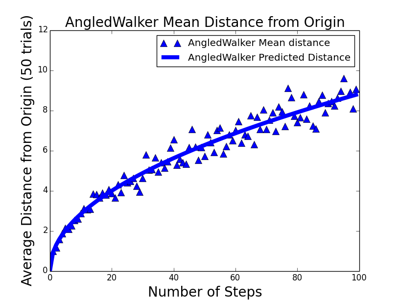
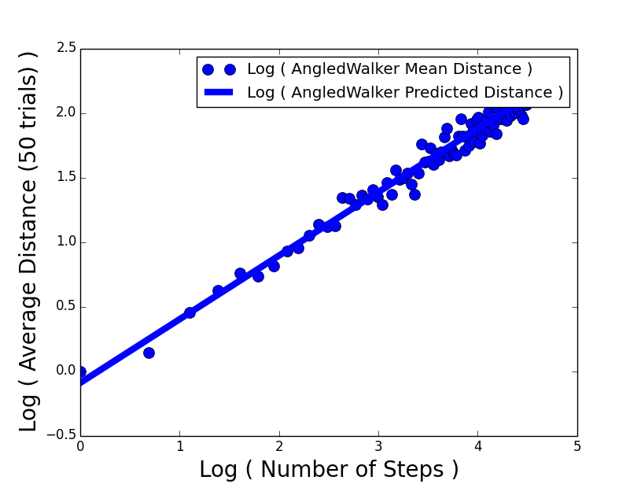
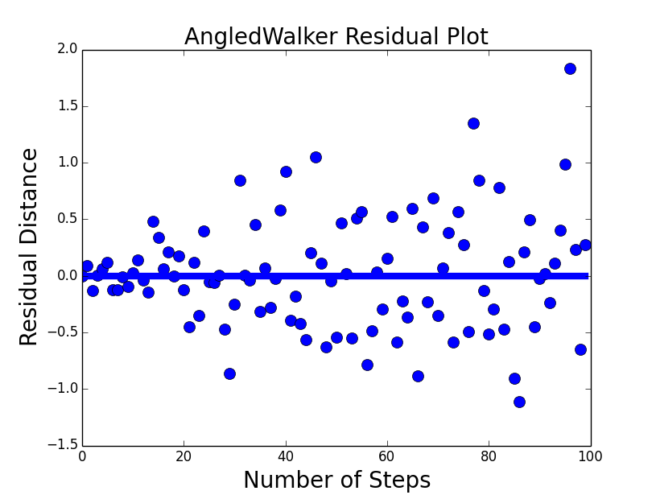
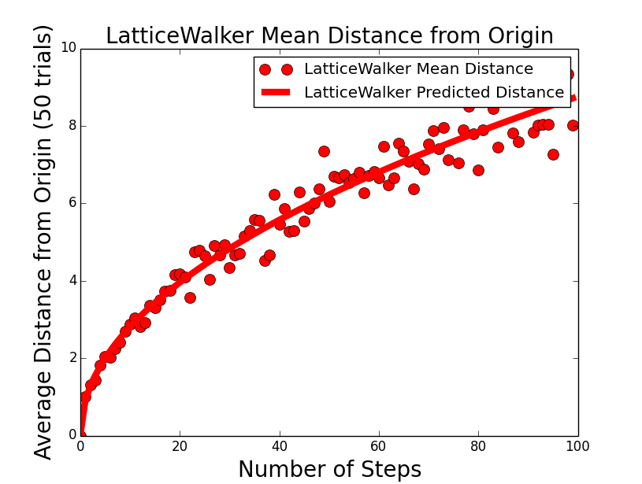
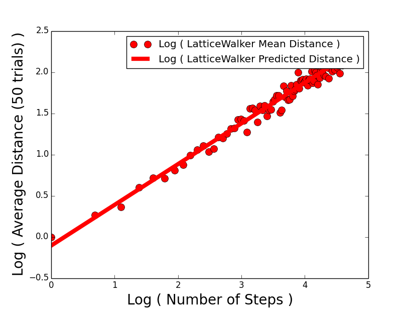
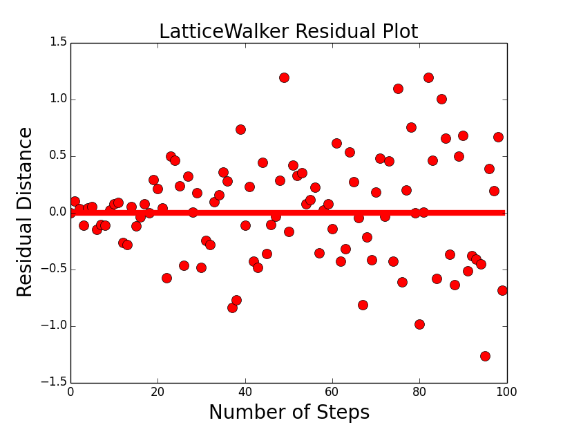

ABSTRACT
In the typical Drunken Sailor problem, a drunken sailor is placed as in the center of pier. With an equal probability of going north, south, east, or west, he takes a random step in one of those directions. The question is: how long will it take before he falls off the pier? In this experiment, we examine the distance from the center of the field where two different types of "walkers" (or drunken sailors) are initially placed to their final position, and find a regression curve relating the number of steps taken and the final distance. In doing so, we employ the statistical techniques of transforming nonlinear data into linear data and fitting a least-squares regression line to the data.
INTRODUCTION
In our experiment, we introduce two types of "walkers." The first one, the LatticeWalker , is the most similar to the drunken sailor. Our LatticeWalker can take a single step up, down, left, or right at the end of each unit of time. The LatticeWalker takes steps 1 unit wide, and can only walk on lattice points. In contrast, our AngledWalker, the other type of walker, can walk in between lattice points. The AngledWalker takes its name from its ability to take a step in a direction denoted by an integral number of degrees (0-360). With both of these walker objects, we hypothesize that the mean distance from the origin after a number of steps would be related to the square root of the number.
THE EXPERIMENT
We conducted this experiment with a Monte Carlo simulation implemented graphically in python using matplotlib. We first defined walker, field, and location classes, and then LatticeWalker and AngledWalker subclasses inherited from the walker class. We then defined methods in which our walkers could move and return their locations.
I decided to stick with 50 trials for each n number of steps taken, taking n from 0 to 1000 steps. Each trial had a separate instance of the same walker object. We placed each walker instance on the origin and ran the simulation. Plotting the mean distance from the origin for 50 trials against n the number of steps taken, we then repeated this for n within 0 to 1000 (figures 1 and 4). With a power regression, we transformed the data so they appeared linear. We then fit a least-squares regression line by minimizing the sum of the squares of the errors (figures 2 and 5). Finally, we plotted the residual distances to see how well our data fit (figures 3 and 6). The r-values and r2-values are provided below as well as the data.
THE DATA
 CONCLUSIONS
From our r2 value, we conclude that the 95% of the variation in the mean distance from the origin is explained in our model by the variation in the number of steps taken. With an exponent close to 0.5, our LSRL approximates a square-root relation. Because the data points represent mean values, it is expected that the individual values will differ more. However, upon inspection of the residual plots, we see that the data fit a triangular pattern, having a wider spread as the number of steps increases on the right, and having less spread as the number of steps decreases on the left. This is partly explained due to the fact that our number of trials was kept constant (50) whereas the number of steps taken gradually increased. To accomodate, we should have increased the number of trials for the data to better fit the curve. As a result, when the number of steps taken increased, the spread of the data increased as well.
SOURCE CODE
- source.zip, 3MB Python code